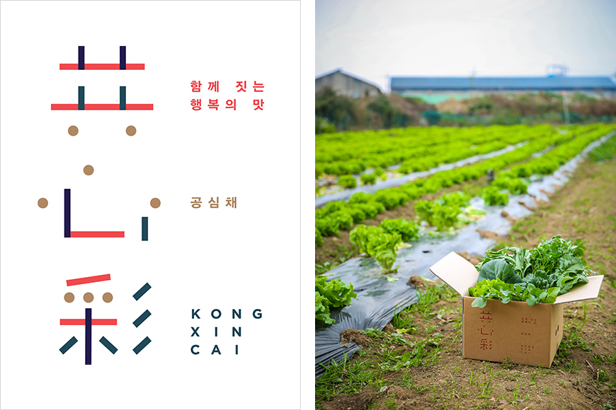

기획취재콘텐츠
- Home
- 제주라이프
- 기획취재콘텐츠
Pioneers of Jeju’s Tropical and Subtropical Crop Industry Part 3새로운 글


Bring minds together to let the light shine. Gongsimchae Agricultural Company: A social enterprise and a tropical and subtropical farm
In Korea, there are 330,000 multicultural households, which account for 1.6% of the total number of Korean households. The total number of multicultural household members stands at around a million. The cultural diversification of Korean society has been driving the consumption of tropical and subtropical fruits in the country. However, Korea still has many hurdles to overcome, such as racism and human rights issues experienced by migrant women. Today, a Jeju company is innovating the food industry by working with migrant women in Jeju. The name of the company is Gongsimchae Agricultural Company, which is the Korean word for morning glory (kong xin cai). In Korean, the name means “bring the minds together to let the light shine.” The company produces, distributes, and processes subtropical vegetables, and it runs various activity programs involving the crops. The company’s goal is to become no. 1 in the Korean agricultural sector.

- (left)Gongsimchae logo, (right)A produce package offered by Gongsimchae ⓒGongsimchae Agricultural Company -
Hong Chang-wook, the CEO of Gongsimchae, founded the company to help migrant women in Jeju stand on their feet and promote the growth of the rural and local communities in the area through subtropical vegetable farming. Chang-wook was convinced that by equipping migrant women with the necessary knowledge on subtropical vegetable farming and selecting an environment suitable for the crops, he could help the women increase their income and lead the future of the food industry.
In the fall of 2018, Gongsimchae began morning glory and cilantro farming in collaboration with the Choenamdan Agricultural Culture Cooperative, which consists of migrant women and members from multicultural families. Then, the company launched the sale of morning glory and cilantro produce via a crowdfunding platform because it was deemed suitable for marketing and selling subtropical vegetables that are not yet popular in Korea. The rewards for Gongsimchae’s crowdfunding project included boxes of morning glory and cilantro, arugulas grown at the Gongsimchae farm, and salad vegetables, potatoes, broccoli, and other winter vegetables grown in the southwestern part of Jeju island. The company also distributed a brochure containing subtropical vegetable recipes.
- Postcards with subtropical crop recipes distributed to supporters ⓒGongsimchae Agricultural Company -
The project exceeded the target funding and successfully completed the pilot sale of its subtropical vegetable products. The use of the crowdfunding platform also helped the company promote its products. Hotels and restaurants in Jeju, including the Hyatt Regency, began to contact the company for vegetable supply contracts. Gongsimchae also collaborated with MY Social Company (MYSC), a consulting / impact investment firm specializing in social innovation projects.
Currently, Gongsimchae mainly produces basil and is working on the pilot cultivation of subtropical vegetables. Subtropical vegetables are not widely consumed in Korea, which makes it difficult to predict the demand for the products and secure long-term customers. For this reason, the company is building its profit base with basil and other herbs, which exhibit a more consistent demand. In the meantime, the company experiments with subtropical crop cultivation to build its capacity as a subtropical vegetable farm and supplier in the near future.
- (left)Basil grown at Gongsimchae’s farm ⓒGongsimchae Agricultural Company,
(right)Eco-friendly straws made of morning glories ⓒGongsimchae Agricultural Company -
(right)Eco-friendly straws made of morning glories ⓒGongsimchae Agricultural Company -
Gongsimchae is currently working on the localization of vegetable production in the respective home countries of its migrant members. This collaboration with migrant women in Jeju targets basil, morning glory, cilantro, and other subtropical vegetables. Moreover, the company grows its morning glory and basil free of any pesticide at a 990 m2 wide greenhouse. They have made a considerable profit by supplying the products to 3 schools catering companies and 10 restaurants.
In October 2019, the company signed a memorandum of understanding with the Seogwipo Multicultural Family Support Center to share cultivation techniques and recipes as well as open locally held food exchange programs, where migrant women cook food from their home countries and share them with local residents. Gongsimchae is also looking for opportunities for developing senary industry businesses using subtropical vegetables by developing and using eco-friendly straws made from morning glories during activity and training programs. They also engage in developing food products using basil.
There is a steady demand for basil because it is usually consumed as a fresh spice. With the increasing popularity of processed basil products, we are gearing up to more product development initiatives this year.
- Hong Chang-wook, CEO, Gongsimchae Agricultural Company
- A migrant woman writes a name on a wooden plank in a garden farm for subtropical crops. ⓒGongsimchae Agricultural Company -
In 2020, Gongsimchae was named a Jeju Social Farm. The designation was made possible as part of a food localization project in 2019. The company continues its agricultural activities with multicultural families.
It is difficult to innovate the local community and the food industry at the same time. Despite the difficulties, Gongsimchae continues to strive to become a leader in the senary industry using subtropical vegetables while fulfilling its duties as a farm championing social welfare. The company ceaselessly develops cultivation technologies suited to Jeju’s environment and provides members from multicultural families with agricultural training. In addition, the company promotes its products through online channels, such as YouTube and Kakao Brunch. Part of Hong Chang-wook’s goal is to train migrant women and multicultural families in becoming YouTube content creators and marketers specializing in Jeju’s agriculture practices. Through this approach, each member can help the company export its products to their home countries.
Gongsimchae will work with more local companies to promote Jeju and natural resources. Our goal within five years is to become a platform that trains migrant women and members from multicultural families to become YouTube content creators and marketers specializing in Jeju’s agriculture practices. This allows them to play an active role in exporting our products to their home countries. By collaborating with designers, marketers, content creators, gardeners, and other experts, we will build our capacity as a company and become the no. 1 agricultural company in Korea.
- Hong Chang-wook, CEO, Gongsimchae Agricultural Company